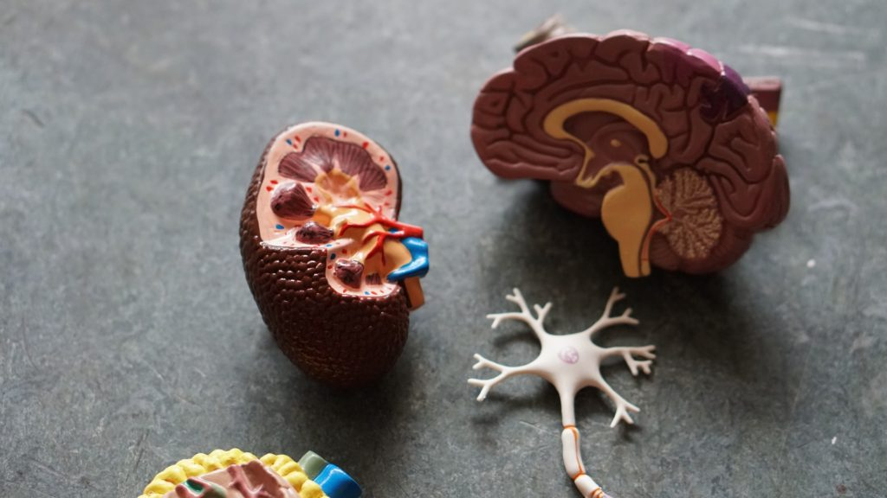

The Ethics of Organ Transplants
Can you kill one to save many?
If you like reading about philosophy, here's a free, weekly newsletter with articles just like this one: Send it to me!
The ethics of weighing lives
Imagine you are a doctor. You are doing organ transplants on children. Your success depends on organ donations. You have a whole hospital ward full of children waiting for organs, and you know that about half of them will die because they won’t get the organs they need in time. Then a baby is born without most of its brain. That baby (call her T) breathes and has a heartbeat, but since she does not have a brain, she will never be conscious or have any kind of human life. Indeed, you know from other such cases that the baby is likely to die within the first ten days of its life.

Of course, doing so would kill Baby T. But it would save the lives of many other children, who would have a real chance of being healed and becoming healthy and happy adults who can lead a normal, full life.
What is the right thing to do?

What Is a Fair Share of Life?
The “Fair Innings Argument” assumes that there is such a thing as a fair share of life. But can we compare different lives in this way?
Harvesting organs for transplants

Photo by Photo by Robina Weermeijer on Unsplash
Organs for transplants are a precious resource. According to the WHO, around 66,000 kidney transplants, 21,000 liver transplants and 6,000 heart transplants were performed globally in 2005. These organs have to come from somewhere. Kidneys can in principle be donated by living donors (since each of us has two of them), but livers and hearts must be obtained from donors who cannot survive the procedure. Although donors can be of any age (in the US, a 92-year old donated a liver and saved someone’s life), young and healthy people are more likely to have young and healthy organs that will be more likely to benefit organ recipients.
So where do we get the organs?
In countries that have a death penalty, organs for transplants might come from executed people, who are often young and (reasonably) healthy. A main source of organs are patients who have suffered a fatal brain damage, due to a stroke or an accident perhaps, but who have otherwise been in good health. And sometimes, like in our case, organs may come from children who are born with an incurable condition and who are expected to die soon.
The problem of killing one to save many is not limited to organ donations. This case provides a good example for discussion, but the same kind of thing can happen with any limited resource that is claimed by one person, while others could benefit from that same resource. For example, one very ill person might occupy a bed in an intensive care unit for a very long time; letting him die and allocating the bed to multiple short-term patients (say, young patients in need of a temporary stay in the ICU) might save more lives.
Would it be permissible to move that long-term ill person out of his bed in such a case? And how can we try to make sense of such cases more generally?
Killing for benefit?
Photo by National Cancer Institute on Unsplash
One moral theory that we could use is called Utilitarianism. The main idea is that when we have to make a moral choice, we should try to maximise the benefit for most people. So the morally right action would be the action that maximises the “utility” (sometimes understood as happiness) of all.
Now, what about our organ transplants case?
Obviously, killing the baby in order to remove its organs would benefit many other babies. Every human body contains many organs: 2 kidneys, 2 lungs, one heart, one liver, corneas and many more. So if we could make good use of all these organs, we could perhaps save five or six lives by sacrificing one.
But then, you might say, what about the one? Would ending the life of the baby not cause more harm (to that baby)?
If you think about it, it’s not so clear. First, the amount of harm (certain death) is the same for all concerned. If the donor baby doesn’t die, the potential recipients will. On the other hand, we can ask whether the donor baby’s life is valuable at all in terms of utility. Does Baby T gain any enjoyment from her life? Does she even prefer to be alive rather than dead? Don’t forget that we are talking about a child without higher brain functions. A child that is not conscious in any way, and that never will be. Such a child cannot possibly have any preferences or enjoyment. But, since she’s biologically alive, we might perhaps suspect that she might be able to feel pain, as many animals do, although they, too, are not conscious in the way we are. So if Baby T feels pain, and if that is likely to be the only sensation that is available to her, then it’s likely that her death will terminate that sensation of pain and that, therefore, she will be better off by dying and donating her organs for transplants.
Killing Joe
Photo by William Isted on Unsplash
Now imagine you have a classmate (of office co-worker), Joe. Everybody hates Joe, and with good reason. Joe makes everyone’s life difficult, he steals things, he lies, whenever possible, to get advantages for oneself. He particularly likes to steal your organic, $8 blue kale smoothie out of the office fridge and feed it to his pet rat that he lets roam around the office. Joe doesn’t have any family or friends. He lives alone with his rat in some basement in the city. Clearly, for everyone except himself, it would be better if Joe was dead.
And look at all of Joe’s organs!
What would utilitarianism say? Joe is different from Baby T, because he’s conscious, he has a full human life and so on. But a hardcore utilitarian wouldn’t make much of these differences. Whatever qualities Joe has, the basic fact remains that his two kidneys, two lungs, one heart and so on can save half a dozen lives. He is only one. So goodbye, Joe!
Obviously, we have a problem here. If we assume that two lives are more valuable than one, then we are already on a path that would allow us to kill anyone because every person is only one, but at the same time is a container for organs that can save many through organ transplants.
Organ transplants: a question of trust
Even utilitarians must be able to see that this is not going to go well. But how could they resist the conclusion that it’s fine to kill Joe and utilise his organs?
Well, they could say that if we allowed the slaughtering of Joe, then nobody in our society would ever feel safe again. You’d go to the hospital and you’d see the spark of excitement in the eye of your doctor as he’s sizing you up: would you be a good fit for his organ transplants list?
Surely this would make people unhappy. We would need to take bodyguards with us when we visit the doctor, and you’d never know if you’d survive the next accident; not because of the accident itself, but because someone claimed your liver while you were in that operating room.
Also, this would cause all kinds of legal trouble. Imagine your grandfather dies while in his care home. Would you believe that he died from natural causes? Or did someone need his kidneys? Could he perhaps have been saved, but nobody bothered, because his kidneys were more valuable without the rest of grandpa? Surely not even utilitarians would want to live in a society like that.
Are two lives worth more than one?
Photo by Jørgen Håland on Unsplash
It seems the trouble lies with the idea that we can add up the values human lives. As long as two lives are worth more than one, we’re in trouble. So what is the alternative?
The German philosopher Immanuel Kant (1724-1804) had another solution. Every human being is infinitely valuable, he thought. Because humans are different from everything else. All other things have a value that I can express as a price, or that I can use to exchange things. I can say, for example, that my old computer is worth as much as a used bike. And if I find a bike owner who agrees with me on these values, I can swap my computer for his bike.
The same is not true with human beings. I would not expect to swap my third child for a bike, even if I needed a bike more than I need a third child. It seems that there’s something wrong with even thinking about children in terms of their financial value. Why is this?
Because human beings don’t have a material value, Kant says. Instead, they have a very special worth (dignity) that comes from their ability to be free, to decide about their own lives, and to pursue their own goals. This ability Kant calls human autonomy. No other thing, no animal has such autonomy. Only humans do, and that makes them special and infinitely valuable.
If we accept this, then we can’t any more trade one human life for another. Human value wouldn’t add up like the value of things does. Two lives wouldn’t be worth more than one, and saving five people with the organs of one wouldn’t be a reason to kill the one.
Or would it?
The problem here is that Baby T was born without a brain that can perform higher mental functions. So she cannot be said to have any sort of moral autonomy, of freedom to decide anything. And, for that matter, the same can be said to be true of any baby, born healthy or not. No baby ever has that valuable autonomy, the freedom to decide how to live its life according to its own preferences and values. For every baby, such an ability is many years, sometimes decades away. Does this mean that babies don’t have the dignity that Kant requires us to respect?
It’s hard to say. Of course, a baby does not have autonomy. But a sleeping, healthy adult also doesn’t. Would we, therefore, be justified in killing people in their sleep if we need them for organ transplants?
Obviously not. The autonomy of a sleeping person may be temporarily suspended, but the potential for it still resides in that person and justifies their dignity and value. They won’t sleep forever. After five, or six, or ten hours they’ll rise and return to being fully human, free, autonomous, moral beings.

Kant’s Ethics: What is a Categorical Imperative?
Kant’s ethics is based on the value of one’s motivation and two so-called Categorical Imperatives, or general rules that must apply to every action.
In the case of healthy babies, the same is true, only the delay is longer. A baby will need not ten or fifteen hours, but ten or fifteen years to become an autonomous human being – but it eventually will. So the potential is there, too, and this potential justifies our treatment of the baby as a human being that has to be respected, even if it is temporarily not able to exercise its autonomy.
But things are different with Baby T. Because of the missing parts of her brain, Baby T will never reach such a state of autonomy. Her condition is not temporary but permanent. The potential to become a fully functional human being is not present in her. Therefore, we might perhaps conclude, she shouldn’t get the special treatment that is required of beings with dignity. Since she has no autonomy, nor will she ever have, we are justified in treating her as something with a value rather than a carrier of dignity. And as such, her value may be used by others, in the same way as we may use any valuable resource to promote our own ends.
Your ad-blocker ate the form? Just click here to subscribe!
What is a human?
Many more arguments could be made about this and similar cases of organ transplants. And many other questions are touched by this one. For example, the case of Baby T is also a case of inclusion vs exclusion: we are called to decide who shall be part of the human family. Who shall enjoy the rights and privileges that we ascribe to ourselves?
If we exclude Baby T from these rights, then we have attached particular conditions to being human. And then we can question these conditions. If Baby T is not sufficiently human because she cannot speak, or hear, or play chess, then how about other humans who cannot do these things? How about others who are different from us in other ways? Throughout human history, always some groups of human beings (or potential human beings) have been excluded from “full” humanity: women, people of a different skin colour, slaves, unbelievers, embryos. Attaching conditions to being fully human opens the door to such exclusions, and we must decide whether, as a society, we want to limit “proper” humanity in such ways, and where exactly we want to draw the line.
In the end, every society has to answer these questions in some way. Nobody can take the burden of this decision from us. But it is the power to decide such issues that makes us human and that is at the basis of our own human autonomy and dignity.
◊ ◊ ◊

Andreas Matthias on Daily Philosophy: